The
Sixth
Circle
"A State's Right To Exist Is Proportional To Its Armaments" - THE GUARANTEE/SUN
Overview
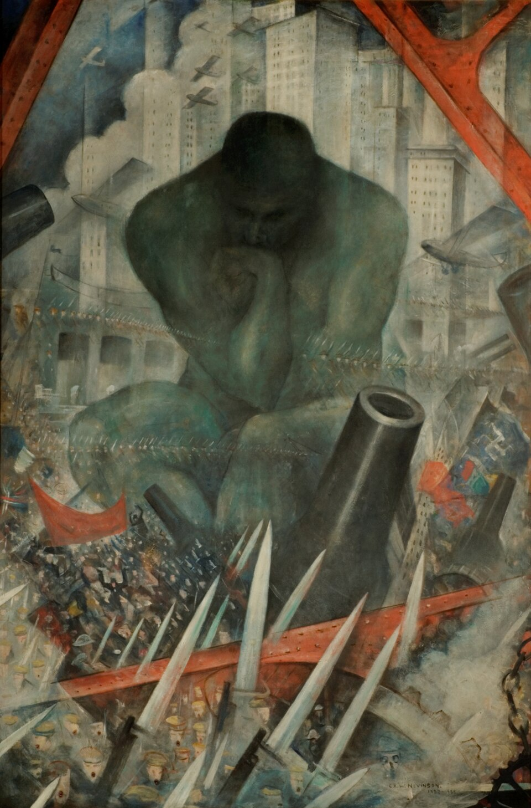
The Sixth Circle is an organization of underground arms dealers that operates within China, primarily from within Hong Kong. Their history dates back to the 1920s, rooted in the origins of Chinese Communism.
The Sixth Circle, while a criminal organization, is also a political group, one that utilizes its illicit activities and nature to fund itself. The ideology of the Sixth Circle is one known as Technomilitant-Communism.
Named after two principles, the "Sixth Circle" embodies prosperity, fortune, and unity. The name was originally adopted in 1922, and has remained in use ever since.
The Sixth Circle was once a much larger organization than it is now, with its operations now being cordoned off only to sections of Hong Kong, rather than the greater surrounding region.
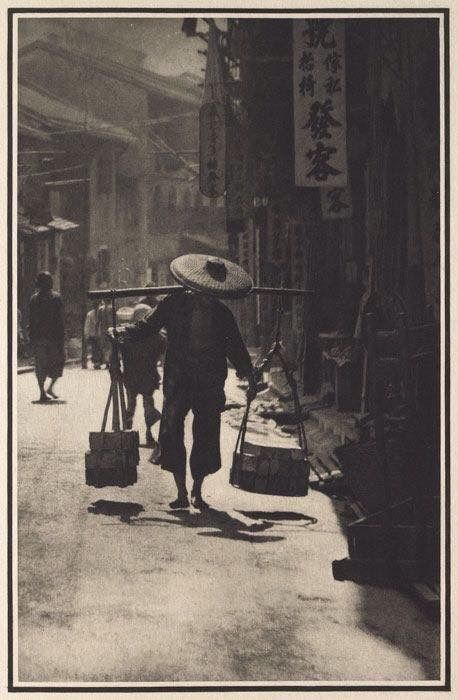
1901 – 1922
Early Years
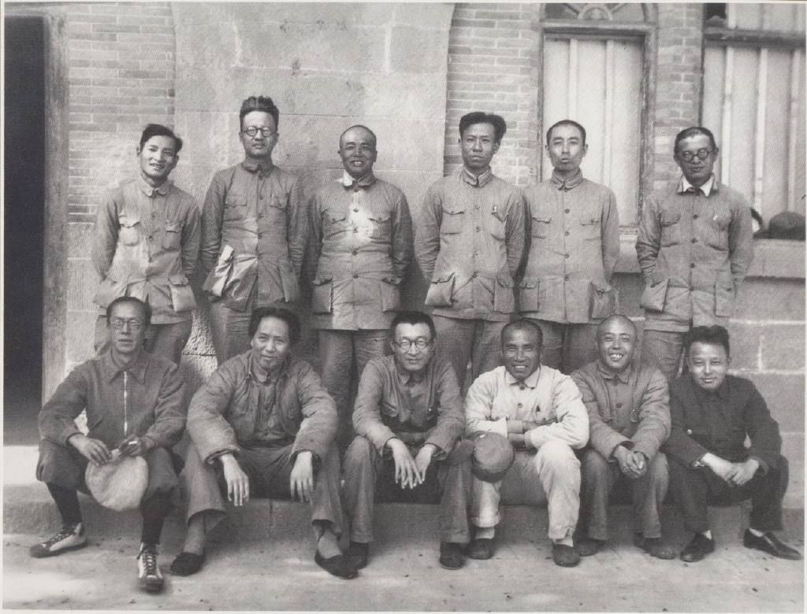
The origins of the Sixth Circle trace back to a pair of men: Guo Weiguo and Sun Xueqin, born 1901 and 1903 respectively. These two individuals were both children of academics. Having met at a young age, they formed a powerful friendship and lifelong bond.
Both Guo and Sun were staunch communists from their youth, invigorated by their own parents who engaged in leftist ideology. While they participated in theory and attended occasional gatherings, it was not until they attended the first national congress in 1921 at Shanghai, held by the newly created Chinese Communist Party, that Guo and Sun would see a path to manifest their beliefs into more than just thought.
This first congress was called when Soviet Communist International (Comintern) representatives Vladimir Neumann and Henk Sneevliet arrived in Shanghai, and urged local Communist figures to call a greater assembly and form an official, national party.
After the congress, both Guo and Sun became active scholars of Communist thought, engaging with contemporary thinkers in Moscow, Berlin, and even Istanbul. They would too become part of the CCP, and rapidly gain respect for their mutual intellect, soon moving to the north-western regions of China, specifically Gansu. There, they would recruit other disillusioned or impassioned youth, forming the Sixth Circle, a branch of the newly formed CCP.
During this time, Guo Weiguo would act as the face of the organization, giving speeches and rallying their members, while Sun, who was more soft-spoken and reserved, worked to write the speeches and commune with other intellectuals.
This was not to say that Guo Weiguo was not too an intellectual, rather that the pair chose to divide the management of this newly blossoming organization in a manner that most reflected their individual talents. It was simply the most effective manner to operate, and Guo would usually edit and discuss the speeches with Sun before giving them.
1922 – 1927
Shift/Comintern
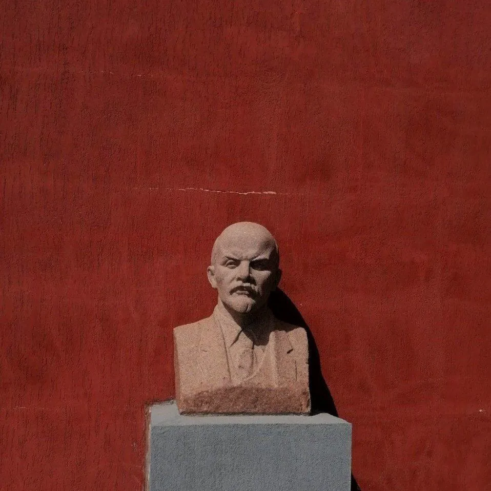
During the early 1920s, it became the view of the Bolsheviks and the greater International Communist movement that the figurehead for a revolutionary motion in China should be the Kuomintang, rather than the Chinese Communist Party. This was rooted in the understanding that the KMT was the most active, most efficient, and most viable progressive force in China. To this end, Moscow believed that the CCP must incorporate under and alongside the KMT.
In August of 1922, Sneevliet proposed that the CCP join the KMT, and when met with opposition, utilized the authority of the Comintern to force the decision.
This meant, in effect, that Leninism would become the new model for the CCP. The party was structured into a Leninist vanguard, designed to lead the way for a greater revolution.
This restructuring was viewed positively by Guo and Sun, who believed the vanguard principle to align strongly with their own experiences forming and running the Sixth Circle. The principle being that a working class could not achieve organized revolution on their own, and that they would require the support of a full-time, capable and centralized revolutionary front to direct energy.
Guo, more than Sun, adhered to this belief. Much of Guo's politics at the time were heavily rooted in Leninism, as he viewed it to be the most contemporary manifestation of Marx's original thoughts. As such, Guo was placed in charge of organizing the Sixth Circle's vanguard, which would become a closed, tight-knit group of intellectuals and military-men.
1927 – 1934
Upheaval

When in 1927, the KMT, under order of Chiang Kai-Shek, led the Shanghai Massacre, a violent suppression and destruction of CCP-aligned actors and individuals within Shanghai, the Chinese Civil War ignited. The massacre itself was the result of long-mounting party conflicts and internal disagreements, aided not at all by the meddling of the Comintern.
The massacre itself had a death toll in the thousands.
It was during this great upheaval that the Sixth Circle would align themselves further with the CCP's leadership, and begin to establish themselves as arms dealers and weapons smugglers. The vanguard formed by Guo utilized various connections, primarily supplied by several military members, to form a cohesive, rapid plan to acquire and supply the party with weapons and munitions.
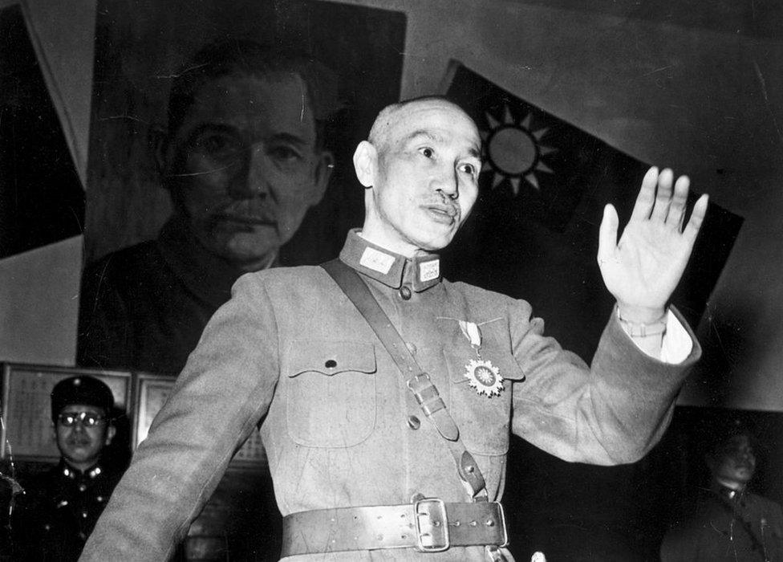
The Sixth Circle, originally situated in the North-West of China, began a long campaign of weapons acquisitions, theft, and mobilization. These weapons were taken primarily by stealing American arms supplied to the KMT, alongside seizing Japanese weapons from Manchuria.
Additionally, the Sixth Circle established a long network of routes from China to the Soviet Union, securing a slow but steady supply of weapons and aid from Moscow directly.
Guo was placed in charge of the continued theft and smuggling of weapons, while Sun worked to recruit new members to the Sixth Circle, confer with the Comintern, and ensure the Sixth Circle remained aligned with the party's momentum.
1934 – 1941
Japan
In 1934, spurred by the collapse of the Jiangxi Soviet following the KMT's fifth encirclement campaign, Guo and Sun, alongside core members of the Sixth Circle vanguard, were directed to leave China. At the time, the KMT had achieved a clear, decisive advantage, and were likely to win the civil war. Fearing utter destruction, the CCP began hedging bets to ensure survival, by scattering certain, capable and loyal officials around Asia.
The Sixth Circle was sent to Japan by party leadership, a move which Guo opposed heavily, as Japan was actively invading China at the time. Guo believed that Japan would be the death of Sun and himself, alongside his vanguard, and he argued that it would be more logical to remain in mainland China and aid the party in regrouping.
Sun however, viewed this movement as a logical divestment. Specifically, Sun believed that the combination of his rhetorical skills with Guo's impassioned speeches could achieve a success akin to their victories in Gansu, where the Sixth Circle first grew its ranks and spread Communism throughout the region, but this time within Japan.
Upon their arrival in Japan, the Sixth Circle first went to ground, as the nation was actively persecuting left-wing thought with a draconian attitude at the time. The Sixth Circle became, not for the last time, nomadic.
They would move between cities and towns, recruiting youth to follow them, or leaving members behind in urban areas. Officially, the leaving behind of members was to spread their ideology further, but in reality, the pair hoped to slow down any efforts the Japanese made to chase them by presenting a list of auxiliary targets, distracting the government.
During this nomadic period, the Sixth Circle maintained its operations in China, spearheaded by close friends of Sun, who maintained rare communions with the pair through encoded letters. Additionally, the pair continued to update themselves on the developments made to Communist thought by their contemporaries. Although, in this matter, they refrained from active, outward communication, rather receiving whatever updates they could in one-way manifestos, letters, and essays.
1941 – 1945
Birth of the Militant Mind
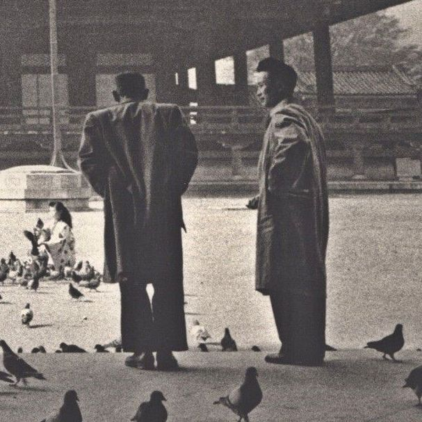
Guo and Sun were within Japan when the nation attacked Pearl Harbour and officially entered into the second world war. The arrival of war caused a dramatic decline in their recruitment ability, and their ability to hide, as the Japanese youth became further radicalized towards nationalism. Fearing capture, the pair split ways, each taking a core grouping of loyalists with them, and going to ground on opposite sides of the nation.
During this time, the pair would, on occasion, write to one another. Most of these letters are gone, either lost or destroyed.
Brother Guo, please read:
I have found myself now in the town of Oguni. It is a quiet place, and reminds me much of Gansu, and the people here are amicable compared to that of the city. I find myself worrying often of you, and of your ventures East.
Our departure, though needed, has left me with a sense of discomfort. I believe together, united, we may achieve anything, but divided? I am not so sure.
Of our people: few still remain from the vanguard. Much have either fled, or fallen. This continued, nomadic life, strains them, and I. I wonder if perhaps we may go to the mountains, and find some hiding place there? There are few people in these woods, and this path may prove itself fruitful. Think on this, and write back.
And now I ask, how are you? Are you well? What of the vanguard you brought with you? Has younger brother Hao returned, or is he, too, lost? Many such more inquiries flood my mind, relevant and irrelevant. But I find limited space on this page. When we meet again, I shall surely assail you with those questions.
Until then, respectfully, with hope that you find and retain safety,
Your younger brother, Sun, bows.
In May of 1942, in the city of Osaka, Guo Weiguo was captured and summarily executed by the Japanese government for far-left politics and anti-state idealism. Word of Guo's death would not reach Sun until September of 1944. Although by then, Sun had already surmised, from the lack of letters, that Guo had been captured.
With his death, Guo's followers scattered, and only a handful would manage to flee the Japanese government for long enough to regroup with Sun.
When Sun gained confirmation of Guo's death, he underwent a new wave of paranoia, which had long been festering, and once more took to a highly nomadic way of life, moving between towns and cities rapidly. During this period, Sun had lost all communication with the Sixth Circle in China, and with the CCP, leaving him isolated and without information.
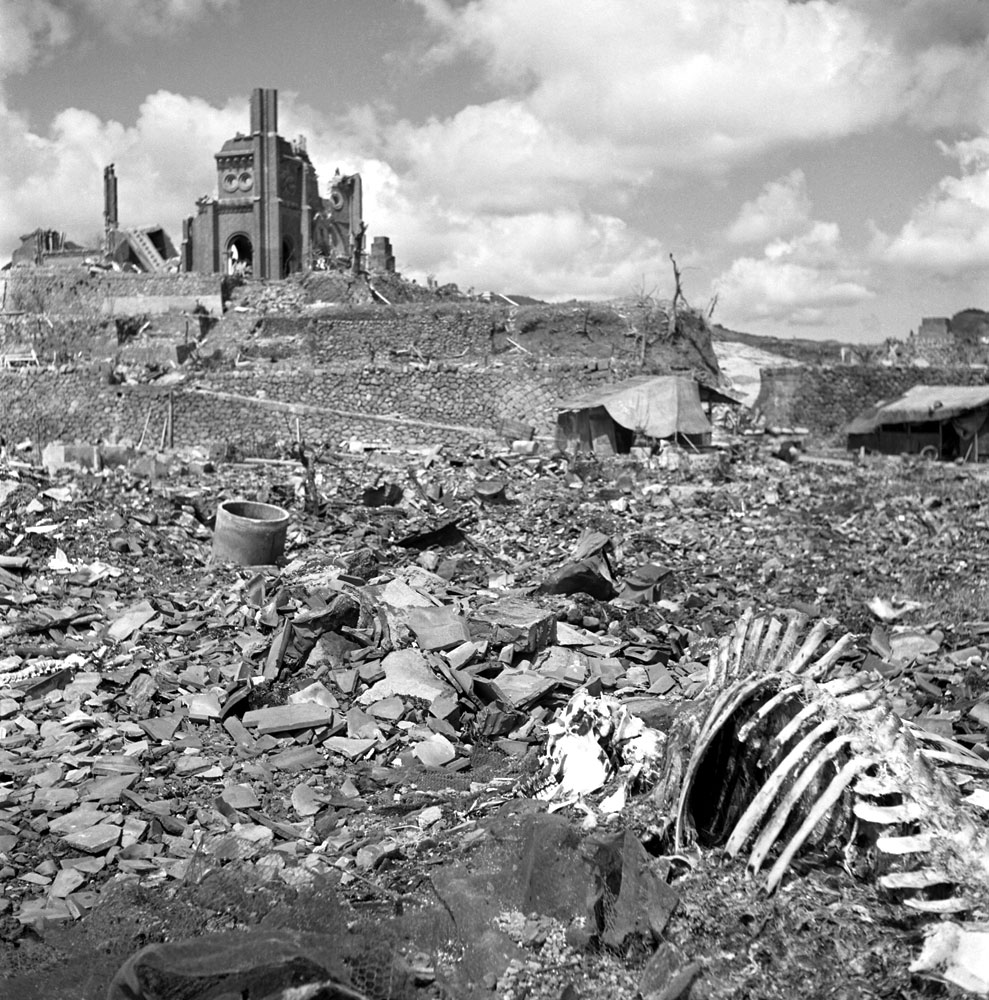
Sun's constant movement placed him, fatefully, in the city of Hiroshima on August 6th of 1945. Here, he would bear witness to the first ever detonation of an atomic weapon. Sun was far enough away from the initial blast to survive, but near enough to witness it, and the corpses.
The unfettered, utter destruction and desolation caused by a singular weapon became, in turn, a singular image in Sun's mind. Martial supremacy, demonstrated by the United States, which forced Japan to surrender with not but two bombs, ending the war.
What a magnificent thing. What a dreadful thing. For one nation to say to another, "I am your better. Grovel," and for the lesser of the two to have no choice in the matter.
1945 – 1949
A New Communism
Sun would later cite his presence in Hiroshima when the bomb detonated as being a fateful encounter, ordained by the universe to grant him the needed inspiration and understanding to formulate a new, more accurate political and societal view.
It was this personal experience with the supremacy of human violence, the atomic bomb, that reframed the way in which Sun Xueqin would act for the rest of his life. From this incident, Sun developed a political theory now called Technomilitant-Communism.
Technomilitant-Communism became the core tenet of the Sixth Circle under Sun, who, following the Japanese Surrender, returned to China.
The beliefs of Technomilitant-Communism are specific. The system argues that for any effective communist state, or any state in general, to exist, there must be an absolute focus and emphasis on the development of military technology. Specifically, Sun believed that China must rush to acquire the newly developed atomic bomb, in order to guarantee its right to exist.
In many ways, Technomilitant-Communism acted as an expansion of Darwinism, extrapolated from individual survival of the fittest to apply instead to entire nations, cultures, and peoples.
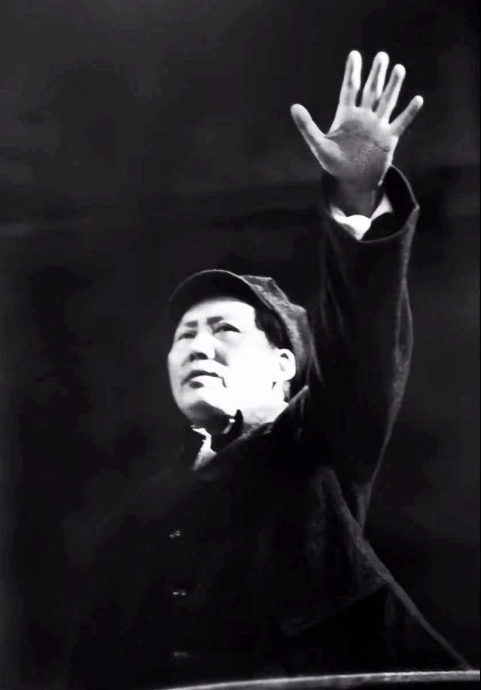
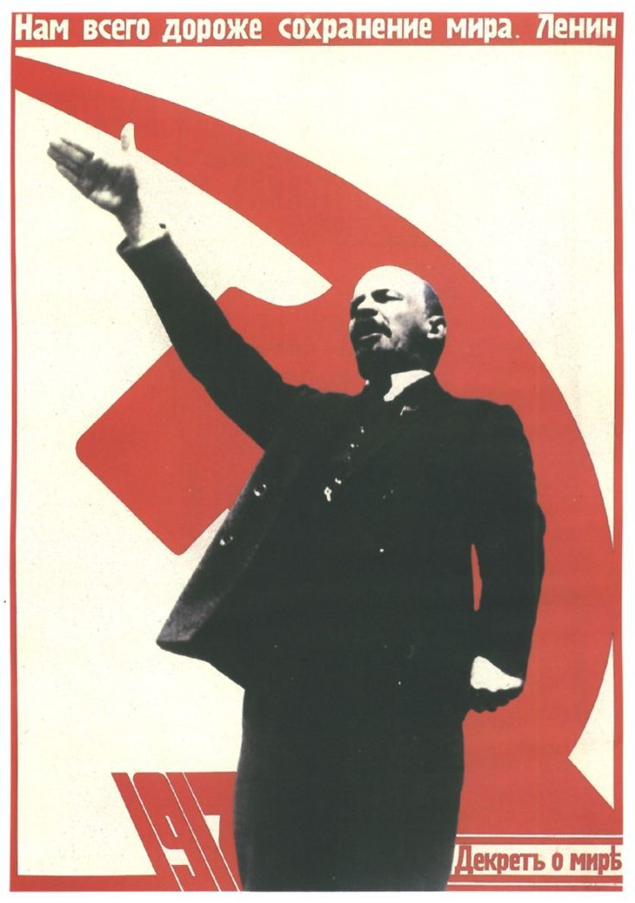
1949 – 1966
Divisions
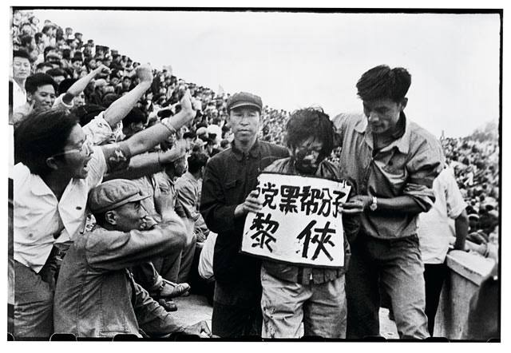
After his encounter with the atomic bomb, and the subsequent surrender of Japan, Sun returned, at last, to the mainland. Following his return, Sun wished to regain control of the Sixth Circle, but was met with opposition from the new leadership of the organization, who argued he had been gone too long.
After much debate, confrontation, and near-violence, Sun called for a mutual discussion. The leadership of the Sixth Circle came to meet Sun and his closest followers within the same building where the first National Conference was held.
They met in a circular chamber of stone and wood, centred on which was a round, stone table. The room was decorated plainly: a dark red carpet covered the floors; the walls had four tall ashen banners, and the table was bare aside from a silver plate for each chair, of which there stood twelve. There were six tall, large candles situated around the perimeter of the room, and the very centre of the chamber had a skylight that allowed the early-morning sun to flow in freely, illuminating dust motes.
When all members were gathered and seated, Sun began the discussion. They spoke for twenty minutes, and came to no agreement. Sun, resigned, informed them that he was finished with speaking. Subsequently, four men emerged from behind the four banners, each holding automatic weapons, and performed a more convincing method of negotiation. The color of the carpet barely changed.
Sun, once more, became the leader of the Sixth Circle on that morning.
Not long after, the Chinese Communist Party succeeded in ousting the KMT from mainland China to Taiwan. Following this victory, China, under Mao Zedong, entered a period known as the Great Leap Forward.
The Great Leap Forward aligned closely with Sun's views, and he personally assisted and involved himself with party leadership during this period. Primarily, the sought-after rapid industrialization of China and its ability to produce massive amounts of steel were Sun's greatest objectives, and the Sixth Circle played a notable part in enforcing various policies during the early stages of the Great Leap Forward. During this period, Sun, alongside certain other members of the CCP, actively played a part in convincing Mao to pursue the Great Leap Forward with a level of disregard for logistics that would later lead to devastation.
When poor planning and improper execution of this plan led to mass famines, Sun, and in turn the Sixth Circle, were blamed by party leadership. While Sun himself remained in a position of power, he was effectively removed from the upper rungs of the CCP and the Sixth Circle were shrunken back into their previous scale, reduced to arms dealers and weapons suppliers once more.
In Sun's view, this was a great injustice, as the famines borne from the Great Leap Forward were a necessary toll to pay for posterity and for an industrialized China.
Six years later, Mao orchestrated the Cultural Revolution, and this period would see the true splintering of the Sixth Circle from Maoist China. During the Cultural Revolution, Mao began persecution of academics and scholars. This persecution was spearheaded heavily by student groups.
This was directly antithetical to the new breed of Communism Sun was pioneering, as he believed academic minds were the backbone upon which a state could guarantee sovereignty through military. Without academics and scholars, he posited, a nation would lack the strength of arms to ensure itself.
Thus, during the Cultural Revolution, Sun and the Sixth Circle left China, scattering to Southeast Asia and the Soviet Union.
1966 – 1971
Return to China
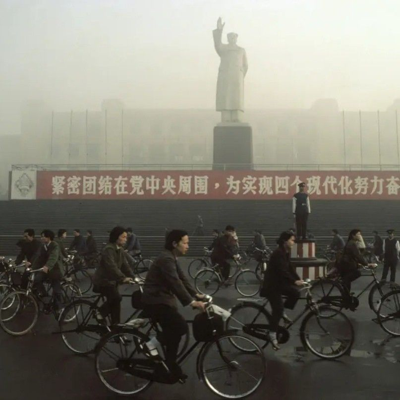
During their time away from China, the Sixth Circle further involved themselves in arms smuggling. They formed large, interconnected networks all across Asia, moving weapons across borders, supplying militant factions, and playing a pivotal role in providing weapons to North Vietnamese fighters during the Vietnam War.
Following the death of Mao Zedong and the rise of Deng Xiaoping as Party Head, the Sixth Circle made its return to China. At this time, Sun was nearing the end of his lifespan, and so began finalizing his manifesto, titled THE GUARANTEE, which espoused the necessity of a supreme military industrial complex, the requirement for a strong army, and the demand for advanced academic institutes to perpetuate new technology.
1971 – 1980s
American Cooperation
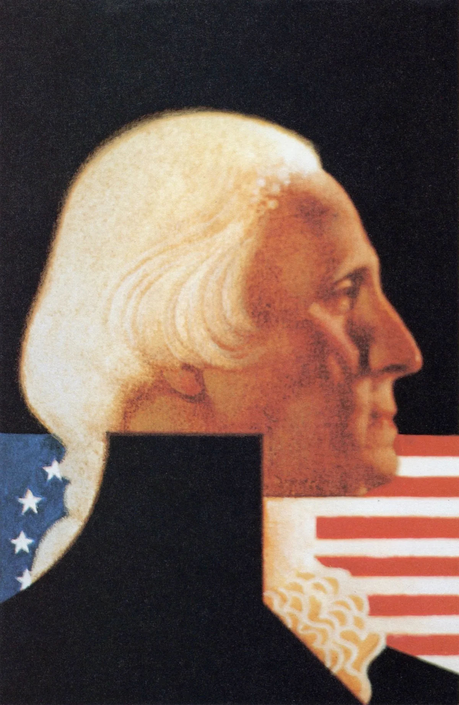
In 1971, Henry Kissinger paid a visit to Pakistan during the genocidal crackdown on Bengalis within the East, dubbed Operation Searchlight. To avoid complicating Pakistan's cooperation, the United States refused to comment on the genocide.
There, he claimed to be sick and remained out of the public eye. This was, in reality, a cover to allow for Kissinger to secretly visit Beijing, aided by Pakistan who acted as a political intermediary, Kissinger met Premier Zhou Enlai, spending roughly 48 hours in China.
The primary goal of this meeting was to lay the foundation for Nixon's 1972 visit, and during the meeting, various matters were discussed, such as Taiwan and the One China vs Two Chinas issue, the Sino-Soviet Split, and Vietnam.
However, Kissinger also utilized this time to enter into discussions regarding his desire to form a closer relation between the American Military, and China. He believed that China and the United States could benefit from cooperation. Much of this was due to Kissinger's system of realpolitik which allowed him to distance ideology from utility.
To this end, Kissinger had a fateful meeting with Sun.
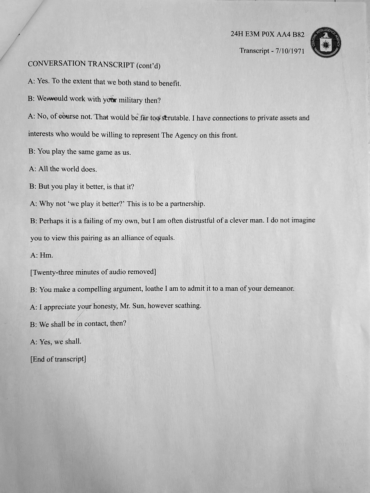
China and the United States would work together several times, such as in 1975, when the United States and China entered into a joint, albeit minor, military endeavor in Angola, supplying weapons to the FNLA in the civil war. Or later, in 1979, when Washington and Beijing operated joint SIGINT sites to watch for Soviet missile tests. The Chinese side of these cooperations were heavily overseen by the Sixth Circle, while the American side was overseen primarily by United States PMC groups Ironcrest International and American West Transport.
These cooperations led to the Sixth Circle and these major American PMCs beginning to partially share their intelligence networks with one another.
At the same time, the Sixth Circle began supplying weapons to the mujahideen in Afghanistan, alongside the United States, becoming the second largest supplier of weapons to the guerilla fighters. Their Afghan operations would remain in place for a decade, and lay the foundation for future Middle Eastern partnerships between the Sixth Circle and the United States, primarily on the axis of the PMC Ironcrest International.
1980 – 1985
THE GUARANTEE/SUN
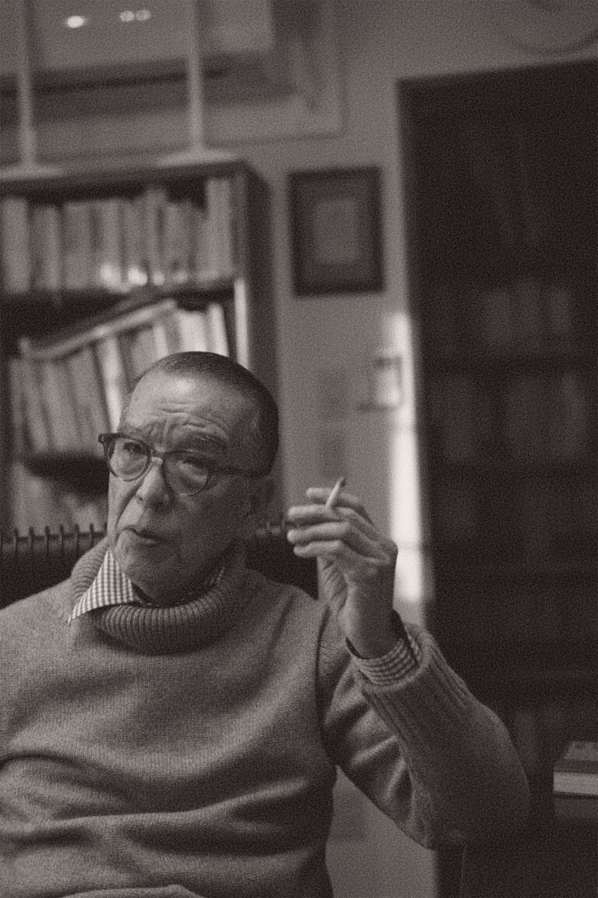
The temper of our time is that of increased armament. The great wars have illuminated the necessity of adaptation. An enduring state must possess, above all, a weapon of assurance: a weapon or weapons that can create and threaten absolute destruction absolutely. This is to say, a state is equal to the sum of its arms, and a state which lacks such a sum is no more a thing than a sandcastle by the sea.
THE GUARANTEE — pg. 9, preface
Much of the text of THE GUARANTEE was developed in unison with the emerging thoughts of the times, which Sun, in his late years, immersed himself in. Notably, Sun deferred a great deal of respect to Deng Xiaoping's four modernizations, primarily along the pillars of science and national defense.
Additionally, THE GUARANTEE, as written by Sun, related some of its views of both Capitalism and Communism to the substance of Félix Guattari and Gilles Deleuze's Anti-Oedipus, Paul Virilio and Sylvère Lotringer's Pure War, and Klaus Theweleit's Männerphantasien. Of these texts, Sun agreed and aligned with Pure War and Männerphantasien, while his relation to Anti-Oedipus could best be understood as a hostile reading that agreed with and took from some ideas, while rebuking or being actively antagonistic towards others. Notably however, Sun took several terms and phrases from Anti-Oedipus which he found useful, such as codes, flows, socius and more.
From THE GUARANTEE, several core concepts could be understood:
Firstly, Sun's view of capitalism as a failing, axiomatic system, compared to the body of the despot, and the necessity for the monolith:
The state is a machine. It is, much like a human, simply the conjunction of all its parts, of which there are countless. A state functions plainly: it is a socius which utilizes codes to direct all manner of flows. This is the purpose and nature of a state.
Capitalism is too a socius, but where a functional state codes, capitalism decodes. It is capitalism's intrinsic need for axiomization (as it is an axiomatic system) which is both its core and its folly.
A lasting, stable state requires a monolithic form, that is, a form which exists in unity within itself. Through codes, an enduring state can form and maintain a monolith, by forming a rigorous contour inside which all its contents must dwell.
Capitalism denies the monolith, for it cares not for the substance of what it consumes, merely that it can continue to consume. Capitalism, much like a thoughtless dog before a banquet, axiomizes all aspects of itself, and in doing so, creates incongruity. This dog is a machine which, through continued use, bloats itself with faulty changes, until it is creaking and breaking apart at the seams, whereas a monolith endures, coherent and sturdy.
THE GUARANTEE — pg. 32, 1.2
Second, Sun's general attitude towards a state's nature and its relation to its weapons:
Indeed, the state must, first and foremost, be an apparatus for armament.
We must grasp two facts in harmony: the state is of the people, of the culture, of the things (the buildings, the food, the objects), and that a state is, despite all that, nothing more than a factory. Each facet of this factory must work in tandem, hence the necessity for the monolith. A broken factory will never match a proper, effective one, both in quantity, and quality.
The end goal of the state is the weapon of assurance. Through which, the state proclaims: "I exist, I deserve now to exist, and I shall continue to exist."
THE GUARANTEE — pg. 46, 1.3
Third, and finally, Sun believed that a state required academia to allow for its armament:
The academic, the science, the university. These are all necessary factors for the development and maintenance of a weapon of assurance. A state must foster and maintain a strong academic class, which shall provide the backbone for its existence.
Without an effective group of scientific academics and researchers, a state will either fail to acquire a weapon of assurance, or rely on foreign entities for its assurance, neither of which are suitable for long lasting, stable statehood.
THE GUARANTEE — pg. 64, 2.1
After THE GUARANTEE was completed, Sun passed away. The contents of his writings would become highly influential and controversial, being utilized by many different scholars, thinkers, and writers, such as Marshal Nikolai Ogarkov's History Teaches Vigilance.
1985 – 1998
After Sun
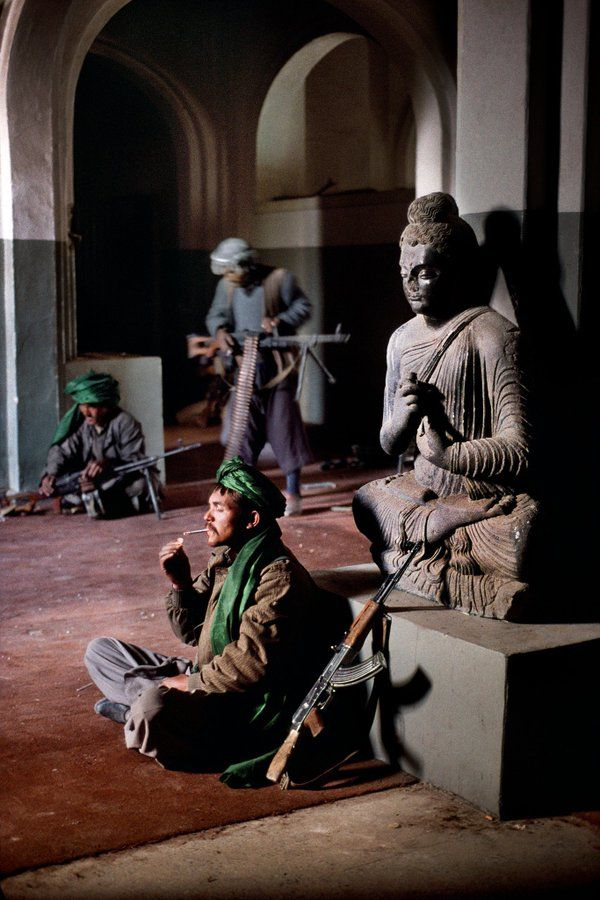
Under the CCP, following Sun's death, the Sixth Circle continued to operate as state-sanctioned weapons dealers, becoming a deniable asset for foreign operations. The CCP utilized the Sixth Circle to move weapons to various communist splinter cells all across the globe, alongside supplying various factions and criminal groups.
Primarily, the Sixth Circle became heavily intertwined in supplying both American Cartels and African warlords with weapons and munitions, alongside communist factions.
Through this utilization of weapons trafficking, China hoped to spread political unrest and militant chaos while also securing relationships and favors, all under the guise of an independent, state-unaffiliated arms dealer group. The primary goal was spreading unrest in targeted locations, while also creating a unified information network.
The Sixth Circle acted in tandem with China's greater soft power developments all across the world, notably in Africa. By developing infrastructure and projects in various African nations, China gained various forms of financial and political leverage. Many of these projects acted as debt-traps, designed to create an immensely oppressive, controlling financial chokehold on many developing nations which China could utilize to influence geopolitics and access tariff-free imports en masse.
Abstract Energy
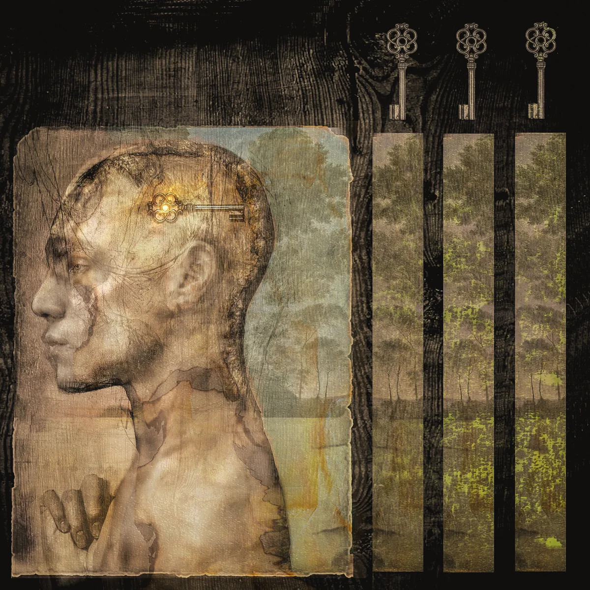
It was during this period between the death of Sun and the later years of the organization, when the Sixth Circle began properly utilizing and experimenting in Abstract Energy.
To this end, the Sixth Circle learned from various monastic orders across China, primarily from taoists, regarding the various esoteric rituals and systems utilized for centuries by these groups. All of this was under the directive of Beijing, but it was also in coordination with the CIA, and specifically Kissinger, who determined that creating a unified body of ritual evocation could in turn allow for all manner of new opportunities in the geopolitical stage. Later, these international discussions on behalf of America would be overseen by the relatively new Federal Occult Committee.
While much of the Sixth Circle's research remained ineffectual, they did succeed in creating a rudimentary form of gift extraction, which could be used to create what we would now know as artificial gifts, or "augments". Effectively, by utilizing complicated processes, a wielder could have their life and energy drained, converted into a form of injection which could be used to temporarily allow a non-wielder to unlock and utilize their own, unique gift.
Additionally, the Sixth Circle, after much engagement with ancient taoist texts, became capable of producing Jiangshi, which they began to utilize as mindless soldiers and servants. This tradition has carried on long into the modern day, with various criminal groups in China creating and utilizing these undead beings as mindless, powerful soldiers.
1977 – 2001
Exceptionalism
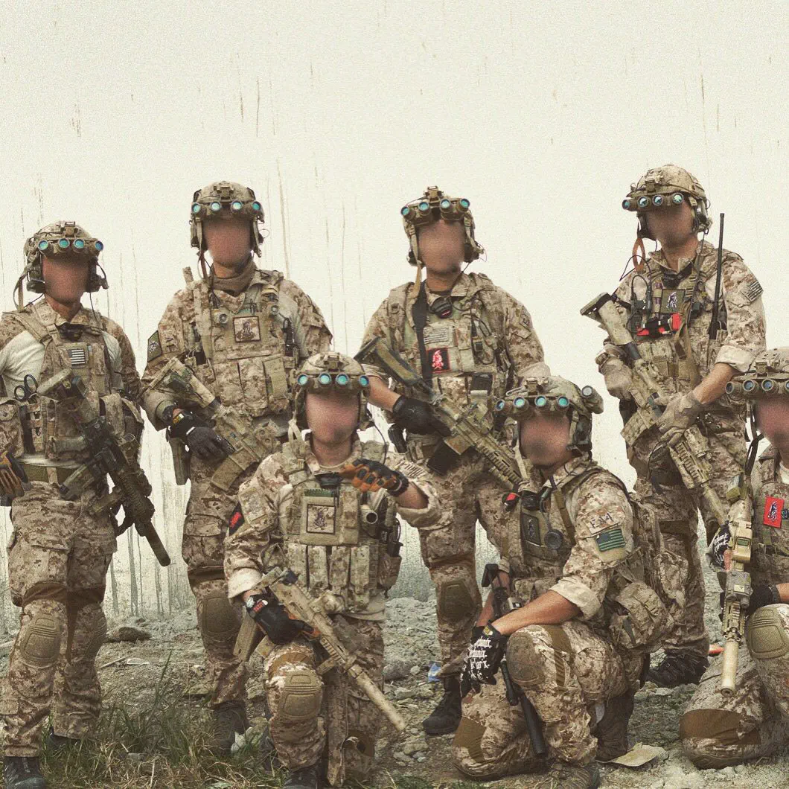
As the Sixth Circle operated as deniable weapons-traffickers for China, they too continued their operations with Washington, almost exclusively operating in tandem with Ironcrest International. This relationship was made possible by shifts within the American intelligence apparatus. Following the congressional investigations of the mid-1970s and the subsequent restrictions placed upon covert action, direct operations by American agencies became legally and politically expensive. Rather than abandon such operations, Washington displaced them outward, into foreign proxies and private contractors, such as Ironcrest.
The Sixth Circle, as an ostensibly independent criminal organization, provided a second layer of deniability that no state actor could offer. The Sixth Circle had already proved itself capable, and had long been cooperating with Ironcrest, thus it was swept up within Washington's greater ambitions.
Kissinger left public office in 1977, and in 1982 founded a private consultancy which allowed him to maintain and monetize the relationships he had built while in government. Through this firm, he continued to broker introductions between American corporate interests and foreign governments or organizations.
His client list was never publicly disclosed.
The following year, Kissinger was appointed to chair a commission on Central America, whose findings recommended a substantial expansion of American military aid throughout the region. The resulting flow of money and material created the conditions for a sustained American expansion into South America, spearheaded by Private Military Contractors.
Ironcrest built atop existing structures: nations and corporations. The military governments of South America had spent the previous decade operating coordinated programs of surveillance, abduction and assassination, and as those governments collapsed through the 1980s, collapses orchestrated in part by the CIA, their officers and soldiers were left without employment.
Ironcrest recruited from this pool directly, inheriting experienced interrogators and death squad personnel alongside their methods. Much of Ironcrest's modern approach to domestic policing, corporate terrorism, and enhanced interrogation techniques originates here.
A private military built from the decay of Latin American dictatorships.
The Sixth Circle worked to supply this expansion, partially greenlit by Beijing, partially not. Chinese arms moved through the same trafficking networks the organization had built for the CCP. These weapons often supplied both American assets and the groups the Americans fought. This was not incongruous, as private interests demanded sustained warfare rather than resolution.
And so war was prolonged, surveillance was increased, and those in power made very, very large amounts of money.
Then, there came a rupture in 1989. Following the suppression of the demonstrations at Tiananmen Square, the West imposed an arms embargo upon China, severing the official channels through which the Sixth Circle had operated abroad. Much of the Sixth Circle who operated within South America were excommunicated by Beijing, and, unable to return, found employment under Ironcrest.
These men shed their political ideology, becoming no more than mercenaries and arms dealers. Gone were the revolutionaries, the nationalists, the brothers in arms, now they were beholden only to individual fancy, and profit.
In the end, the only idea of Sun's that remained in their minds was the belief that power alone was the supreme ideal.
In 1998, leadership of the Sixth Circle transferred to Huang Renshan. Huang was, for all intents and purposes, a Technomilitant radicalist. He subscribed entirely to THE GUARANTEE, but only insofar as the idealization of the military. Huang cared little for communism, economic strategy, or social coherence.
He wished for China to enter further into a militarized state. In his view, the goal should be not only to possess a supreme military, but also to use it constantly. Usage of the military was needed for both maintenance, testing, and shows of force.
Following the September 11th 2001 attacks on the World Trade Center, America entered into a new stage of prolonged warfare in the Middle East. To Huang, America became, in many ways, the ideal: a military superpower that used their strength unabashedly. He praised the manner through which the United States consistently engaged in warfare, expanded its list of military bases, and projected strength throughout the globe.
This led to tensions within the Sixth Circle, and weakened the organization's relationship with the CCP. As a result, Huang began to engage in closer relationships with the American government, moving the Sixth Circle towards a multi-polar position. The Sixth Circle formed greater bonds with various facets of the American Military, primarily by aiding the United States in their Middle Eastern war efforts following September 11.
Sudan War
The Sixth Circle, as China's primary arms dealers within Africa, played a pivotal role in supplying the Sudanese Armed Forces in the Sudan War. While China officially maintained a status of neutrality, their arms shipments heavily favored the SAF over the Rapid Support Forces, who opposed the SAF in the civil war.
As the war progressed into the late 2020s, the Sixth Circle became further interwoven with the conflict, under directive of Huang. Huang wished to further increase the shipment of arms to the SAF, believing that a decisive SAF victory in Sudan would plant a powerful Chinese stronghold in Africa during a crucial moment in the shifting of the global order.
To secure these shipments, Huang rerouted Chinese weapons bound for other nations to instead be shipped to the SAF. In effect, Huang disobeyed the directives of the CCP, and wagered that such disobedience would pay off if the SAF achieved a decisive victory.
Before embarking on his wager, Huang gathered many high ranking members of the Sixth Circle, alongside the rank-and-file. He gave this address, of which a transcript was saved, and distributed to some who could not make it:
I am aware, as I always am, of the dissenters amongst you. Those who think my leadership ill-wrought, those who think my politics ill-conceived. I ask of you this: are you idealists, stuck in fanciful dreams, or are you men of the earth, of this earth? Where, I ask, do you believe we shall find ourselves if all we ever do is espouse belief, if all we ever do is remain rigorous in our politics and never change? Where, I ask, do you believe we shall find ourselves if we never take initiative, never move as we ourselves wish?
[A pause of three seconds, accompanied by murmuring in the crowd]
We shall arrive at nothing, nowhere. We will forever circle the same existence, the same actions, the same outcomes, and wait for someone else to make change. But that is wrong. We are the change, do not forget that!
[A general murmur of approval]
And so I ask this too! Do you not think yourself capable? Do you not think yourself intelligent? Must you have a leash, to be guided with, or can you roam free of the hand that feeds, and hunt for yourself?
And what of us, I ask? Your comrades too? Do you not think them intelligent, or capable? Are we not all hunters, not all savage and clever and potent? Shall we live our lives forever on the leash, in the house, waiting for the master?
No. I think not! We are more than that! Our belief makes us more than that. Sun Xueqin, Guo Weiguo, those who made us, were more than that! Now, we shall prove it.
[Loud applause and cheers accompanied the end of the speech]
When the speech concluded, Huang stood in a firm pose for several seconds, right arm raised, left arm lowered, head held high. The light caught him from below and illuminated the planes of his face, darkened the grooves of his eyes, mouth, and nose; darkened those grooves to a pitch, and he looked, for a moment, inhuman.
With these weapons, the SAF indeed managed several notable victories over the RSF, however, these victories were soon followed by ethnic targeting.
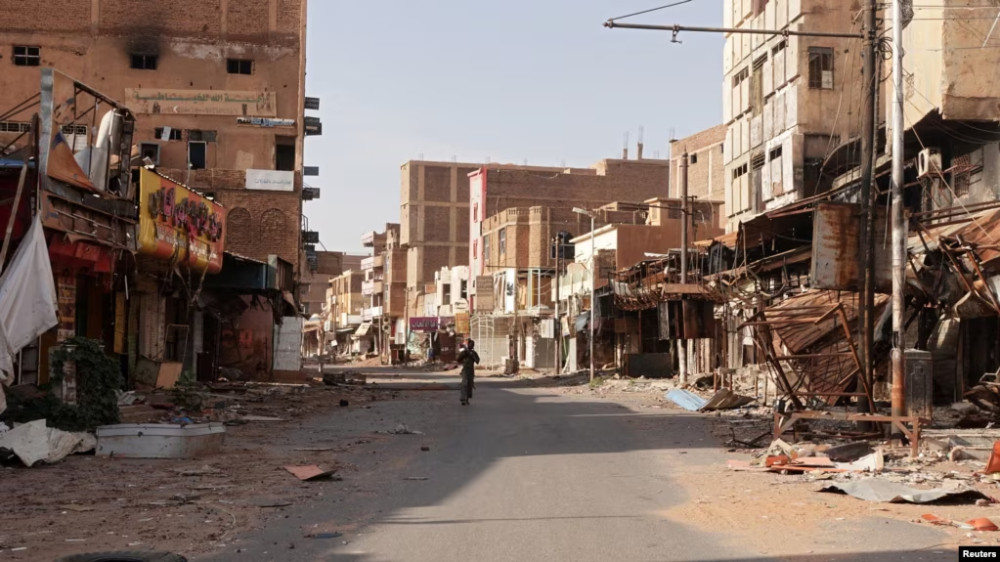
The RSF, as an Arab paramilitary organization, had long since persecuted non-Arab civilians, constituting a genocide as agreed upon by the United Nations and several other entities. With sizeable victories occurring all at once, the SAF conducted a retaliatory genocide of Arabs all across seized territories.
The death toll within one week rose to nearly ten thousand.
China condemned these actions, and forcibly cut the Sixth Circle off from Sudan. The situation became a political crisis as the international forums discovered that the SAF were utilizing primarily Chinese arms and equipment to continue their war effort and perpetuate the genocide. The blame was placed on the Sixth Circle, specifically on Huang, who was sentenced to be executed for treason.
Huang sought to flee to a refuge in South America, but before he could, was betrayed by his own guard, captured, and returned to Beijing, then shipped to Hong Kong.
Huang
The execution was to be handled not by Beijing, not by the Party, but by the Sixth Circle. This was their request, for they wished to be the ones to execute the traitor, and to make of it a spectacle. Whether this was loyalty, or a desire from the new leadership to prove obedience to Beijing, remains unknown.
Beijing refused, at first, but were persuaded by the imagery: the Sixth Circle killing the traitor, their former leader, themselves before a crowd of their own. It would set a precedent to all those in attendance: obey the party, obey Beijing.
The execution was scheduled exactly at noon in a large square, a square long since owned and used by the Sixth Circle for addresses and meetings.
It was floored in stone slabs, overlooked by a towering, reddish-orange statue of Mao Zedong, who stood with a firm, judgemental expression. He was flanked by two smaller statues, Guo, and Sun.
A crowd had gathered by the time the sun reached its apex behind the clouds, a crowd that numbered in the hundreds, each a member of the Sixth Circle, jam-packed into that square until the place felt at once cramped, and the air turned warm and dense in the way that only a mass of people could cause.
There was a wide platform, elevated, beneath the three statues.
Huang stepped out onto the platform to a flurry of insults and expletives. Two men followed him, ensuring he did not attempt to run. He walked with his head held high, in spite of the bruises and cuts littering his battered form beneath the ragged clothes he wore.
And it was there that Huang was held in place, a noose tied around his neck, slowly, to give the crowd time to pelt him with all manner of things: pebbles, fruits, glass. When finally the noose was tied, he was given the opportunity to speak. He turned back to face the statues, and said only this:
I have never betrayed you, and I have succeeded.
And then the floor opened beneath him, and his broken body fell, and his neck too became broken. Then he died, with little movement or thrashing, and to roaring applause.
2218
Modernity
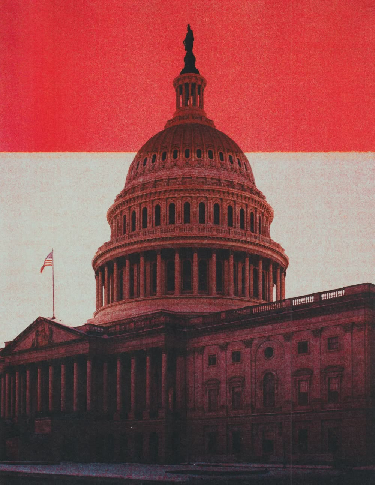
After the death of Huang, the Sixth Circle shrunk slowly within China. Those remaining elements of the Sixth Circle outside of China chose to ensure their existence by consolidating under Washington, regrouping with former comrades now employed by Ironcrest, and joining up with the PMC.
Many of these individuals were those in charge of researching and developing Abstract Energy under the Sixth Circle, and as a result, the United States offered them amnesty and protection in exchange for their knowledge. Ironcrest, because of this, creates and utilizes their own modified form of Jiangshi, although this usage is sparse, both to avoid criticism from the public, and also not to alert the watchful eye of the U.N.W.C.
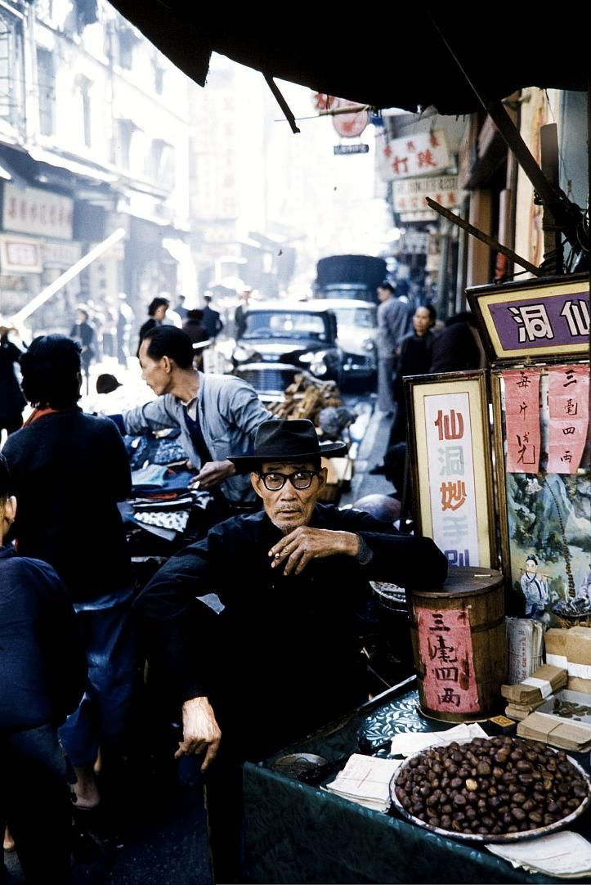
To ensure their survival, the remaining Chinese leadership of the Sixth Circle focused their efforts on stabilizing the organization within the scope of a single city: Hong Kong.
Over nearly a century, the Sixth Circle continued to slowly shrink, before finally stabilizing into a sizable, but notably not major, faction within China.
In the modern day, the Sixth Circle remains mostly as a relic of a bygone era: a truly communist China, a revolutionary ideal, a changing world. The organization has become nothing more than arms dealers and weapons traffickers, albeit with a political belief. Of this belief however, little has come, as the Sixth Circle of the modern day lacks the ambition or desire to push for any change.
This is not to say the organization is small, or irrelevant. They possess a notable amount of power within Hong Kong, connections around China and Asia, and their name still holds some merit within the West, mostly due to their long-ago defecting members who joined Ironcrest.
In this way, the Sixth Circle endures as nothing more than a shell, the dog on the leash, not aspiring, not chasing, simply content.